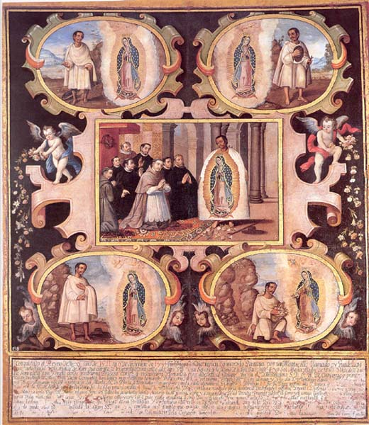

La visión de Juan Diego
Virgen de Guadalupe de Juan Correa (Ciudad de México, 1667)
Inscripción:
1 Conquistado el Reyno de Mexico año de 1521, en 9 de diçienbre de 1531 Juan Diego, Yndio recién Convertido, Passava por un Montecillo llamdo oy Guadalupe / legua corta de la ciudad y oió Música de Aves que extrañó y le suspendió y mirando a lo alto, Vió Una Señora que le llamó y le dijo: Save hijo que yo Soi María Madre de Dios Verdadero quiero / que Se Me edifique aquí Templo donde mostrarme Piadosa con los que me buscaren. Y le mandó fuese a Deçirlo al Obispo, (que era el Ylustrissimo Señor Don fray Juan de Çumarraga, primer / Obispo y arçobispo de México, hijo deste Convento) / y assi lo hiço, mas el Obispo le mandó Volver otro día,
2 y el mismo Volvió Juan Diego al monte y Vió a la Sa y la refirió el poco crédito que avia avido / en el Obispo y le mandó repitiese con efficaçia Ser María Madre De Dios la que le embiaba y con prudente cautela [refirió] el crédito el Señor Obispo
3 Domingo 10 fue Juan Diego a referir a la Señora la poca eficaçia de su embajada / y la Ssma Madre dejando para otro dia Darle Señales fijas para el crédito.
4 Lunes 11 no Volvió Juan Diego, como le era mandado, por la assistençia De un tio suyo enfermo, y martes 12 huyendo del camino acostumbrado / por no deternerse con la Virgen Ssma y llebar religioso francisco, que diese los sacramentos a su tio, le ocurrió la Madre Piadosa, le vino y le asseguró de la salud De su tio y mandó subiese al Cerro y que cortase las flores [...] que allase, que admiró / nunca Vistas ni criadas en tales peñas y siendo ybierno, cojió y cortó las que pudo recoger en su tilma que sirve de capa y las cojió con sus manos María Ssma y se las volvio a dar mandándole que [...] en presençia Del Obispo / soltase la tilma; con obediençia prompta fue Juan Diego a casa Del Obispo y le rejistraron los criados las flores y soltando en la sala Del Obispo y en su presençia la tilma cayeron las flores en / el suelo quedó la tilma Dibujada la ymagen Ssma que oy se conserva en el templo que mandó edificar con infinitos milagros y benefiçios quedando [...] tilma por la otra parte dibujadas / las [...] Del misterio De la Conçepçión inmaculada de la Madre Piadosa De [...] que la buscare [...] Juan De Correa fecit: año 1667.